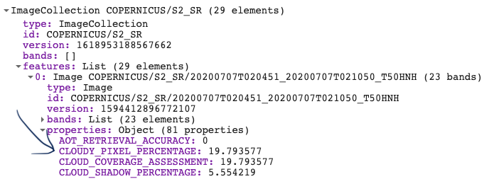

GOOGLE EARTH ENGINE FOR ECOLOGY AND CONSERVATION
Practical 3: NDVI time-series over a single region
Access the completed practical script here.
Learning Objectives
By the end of this practical you should be able to:
- Write a custom function
- Mask clouds from an image or image collection
- Map (loop) it over a collection
- Plot a time-series
- Export data as a csv and image
Introduction
Vegetation indices, such as NDVI and EVI are a foundational for understanding phenological patterns through remote sensing. NDVI can help us differentiate
vegetation from other land use classes, as well as assess patterns in the vegetations' state. It is broadly used across ecological and agricultural studies
that can help to simplify the complexities of multi-spectral remote-sensed imagery. In this practical, we will explore NDVI using the Sentinel-2 surface
reflectance imagery. We will learn how to build our own functions, mask clouds over your image collection, calculate NDVI for your image collection, and lastly
export your images and results in a csv format.
Importing & Filtering datasets
We start by creating a polygon. This can be done by using the polygon tool in the GEE code editor. We then filter the ImageCollection by time and space.
Lastly, we filter it by the amount of cloud cover to remove excessively cloudy scenes. This is done using the image property called 'CLOUD_COVERAGE_PERCENTAGE'.
// Create image collection of S-2 imagery for the full year of 2019 var s2 = ee.ImageCollection('COPERNICUS/S2_SR') //filter start and end date .filterDate('2019-01-01', '2019-12-31') //filter according to drawn boundary .filterBounds(geometry) // pre-filter to get less cloudy images (only keeps images with less than 20% cloudy pixels) .filter(ee.Filter.lt('CLOUDY_PIXEL_PERCENTAGE',20)) ;
Find the Sentinel-2 surface reflectance dataset here: Sentinel-2 MSI: MultiSpectral Instrument Level-2A
Write and Map a function
We will now use our first function. This function creates a cloud mask based on the metadata within each image of the collection.
Look up the band information in the Sentinel-2 metadata. We create a variable name for the overall function called maskS2clouds.
We then create a set of internal functions to apply each image in the ImageCollection. Make sure the new names variables within your function are consistent.
The information for
This is the default cloud masking process provided by GEE for Sentinel 2 images, though there is now an alternative, where you can use the
Sentinel-2 cloud detector library (see here for more information: Sentinel-2: Cloud Probability.
We then use the map() function to apply a built-in algorithm or our own function over the Sentinel-2 collection.
// Function to mask cloud from built-in quality band // information on cloud var maskS2clouds = function(image) { var qa = image.select('QA60'); // Bits 10 and 11 are dense clouds and cirrus clouds, respectively. // They are stored as bit 10 (or 2^10) and bit 11 (or 2^11), respectively. var cloudBitMask = 1 << 10; var cirrusBitMask = 1 << 11; // Both flags should be set to zero, indicating clear conditions. var mask = qa.bitwiseAnd(cloudBitMask).eq(0) .and(qa.bitwiseAnd(cirrusBitMask).eq(0)); return image.updateMask(mask); }; // run the mask cloud function over each image in the s2 collection var s2_cloudmask = s2.map(maskS2clouds);
The above code is complicated, so let’s make sure we are happy with what the output. Let’s do this by plotting a unmasked vs. masked image.
// Let's take a look at what this function is doing... // Print the unmasked dataset sorting it from the most to least cloudy image print(s2.sort('CLOUDY_PIXEL_PERCENTAGE', false), 'S2 collection clouds'); // We can select the most cloudy image by sorting the list in descending // order and selecting the first image Map.addLayer(s2.sort('CLOUDY_PIXEL_PERCENTAGE', false).first(), {min:0, max:3000, bands:['B4','B3','B2']}, 'Cloudy image first'); // Plot the cloud mask layer QA60 Map.addLayer(s2_cloudmask.sort('CLOUDY_PIXEL_PERCENTAGE', false).first().select('QA60'), {min:0, max: 1}, 'Cloud mask', false); // Let's now plot the image with the cloud mask applied Map.addLayer(s2_cloudmask.sort('CLOUDY_PIXEL_PERCENTAGE', false).first(), {min:0, max:3000, bands:['B4','B3','B2']}, 'Cloud masked image');
Next we will make a custom function to clip the image to our AOI and add a band to the image containing NDVI values. We will use the normalizedDifference() function and apply it over the near infra-red and red bands. Lastly, we will rename the new band to ‘NDVI’. Note that the function is now nested inside the map function. Print out the new ImageCollection to view the new band.

/var s2_ndvi = s2_cloudmask.map(function(image) { var s2_clip = image.clip(geometry) return s2_clip.addBands(s2_clip.normalizedDifference(['B8', 'B4']).rename('NDVI')) }); print(s2_ndvi, 's2 with NDVI');
Visualisation
Next we will create a time-series plot over the NDVI band of the ImageCollection.
This is done using the ui.Chart series of functions. The function you chose depends on the type of data you are using.
In this case, we are running an image series over a single region, so we will use ui.Chart.image.series().
The primary inputs here are: the ImageCollection, area of interest (geometry), a reducer, the band of interest,
the scale and the x-axis property (which defaults to ‘system:time_start’).
In GEE, calculations that summarise your data are called reducers and can be called using the ee.Reducer series of functions.
Here we will use ee.Reducer.median() to calculate the median NDVI values across our area of interest.
Lastly, we can specify details for the chart, including the type of chart and then label options.
Run print() to see the output of the chart in your console. Hover your cursor over the chart to see interactive details.
For more details on customizing your charts see: https://developers.google.com/chart/interactive/docs
The last step, as always, is to save the script.
Practical 4 Exercise
Repeat this practical but use NDVI instead of EVI and Germany instead of Costa Rica.
You can also play around with different dates, keeping in mind the different date limits for each ImageCollection.
To share your script, click on Get Link and then copy script path. Send your completed script to ots.online.education@gmail.com.
If you're feeling adventurous, save the results as a new App and forward the URL link along with your script.
Do you have any feedback for this practical? Please complete this quick (2-5 min) survey here.